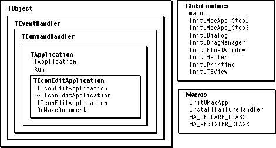

Legacy Document
Important: The information in this document is obsolete and should not be used for new development.
Important: The information in this document is obsolete and should not be used for new development.


Recipes--Applications
The recipes and sample code in this section demonstrate how to create and launch a MacApp application. Figure 11-1 shows a partial class hierarchy for MacApp's application classes, including theTIconEditApplicationclass from the IconEdit sample application. It also shows some of the macros and initialization routines that are used to launch an application.Figure 11-1 Application classes, methods, and initialization routines

Recipe--Defining a Subclass of TApplication
To define a subclass ofTApplication, you perform these steps:
The sample code shown in this recipe is from the IconEdit application.
- Provide a class definition.
- Provide constructor and destructor methods.
- Provide an initialization method.
- Override the
DoMakeDocumentmethod.
Provide a Class Definition
The definition for your application class should look something like the definition of theTIconEditApplicationclass:
class TIconEditApplication : public TApplication { MA_DECLARE_CLASS; // Macro for RTTI info. public: TIconEditApplication(); // Constructor. virtual ~TIconEditApplication(); // Destructor. virtual void IIconEditApplication(); // Initialization. virtual TDocument* DoMakeDocument(CommandNumber itsCommandNumber, TFile* itsFile);// Override. // Some methods not shown. };Provide Constructor and Destructor Methods
Since theTIconEditApplicationclass adds no additional fields toTApplication, its constructor and destructor methods are empty. For a recipe that shows nonempty constructor and destructor methods, see "Provide Constructor and Destructor Methods," beginning on page 279 in Chapter 10, "Working With Objects."Provide an Initialization Method
The initialization method for your application class should perform the following tasks:
Consider the initialization method for
- It should call the initialization method of its parent class.
- It should perform any initialization specific to your class that can't be handled safely in a constructor method.
For example, a constructor should not perform operations that may fail, such as allocating memory. So if your application needs to allocate memory, you do so in the initialization method.
TIconEditApplication:
void TIconEditApplication::IIconEditApplication() { this->IApplication(kFileType, kSignature); MA_REGISTER_CLASS(TIconEditView); } // IIconEditApplicationTheIIconEditApplicationmethod callsIApplicationto ensure proper initialization of MacApp. The constants passed toIApplicationspecify a file type and an application signature.After calling
IApplication, theIIconEditApplicationmethod performs any initialization specific to the application. ForTIconEditApplication, that consists entirely of using theMA_REGISTER_CLASSmacro to register theTIconEditViewclass so that the application can create view objects of that type by name or by class ID.As an example of application-specific initialization, if you don't want your application to open a new document when launched (MacApp's default behavior), include the following line (after calling
IApplication):
fLaunchWithNewDocument = FALSE; // No new document at launch.Override the DoMakeDocument Method
In MacApp, the responsibility for creating documents falls to the application object'sDoMakeDocumentmethod. In theTApplicationclass, that method does nothing, so you must overrideDoMakeDocumentto create the kind of documents your application requires.The
DoMakeDocumentmethod creates and initializes a document object and returns a reference to it. The following is theDoMakeDocumentmethod from theTIconEditApplicationclass:
TDocument* TIconEditApplication::DoMakeDocument( CommandNumber/*itsCommandNumber*/, TFile* itsFile) { TIconDocument* anIconDocument; // Create and initialize a TIconDocument object. anIconDocument = new TIconDocument; anIconDocument->IIconDocument(itsFile); // Return a reference to the document. return anIconDocument; }TheitsCommandNumberparameter can be used to determine the type of document to create, but it is commented out here because the IconEdit application only creates one kind of document. Your application can set the command number passed toDoMakeDocumentby overriding theTApplication::KindOfDocumentmethod. It can also create different kinds of documents based on the command number. For more information, see "Kinds of Documents," beginning on page 169.Recipe--Launching a Simple Application
To launch a simple application, you perform these steps:
The sample code shown in this recipe is from the IconEdit application.
- Define a subclass of
TApplication.- Create a
mainroutine.
Define a Subclass of TApplication
This step is described in "Recipe--Defining a Subclass of TApplication" on page 289. If your application supports PowerTalk mailers, your application class should descend from theTMailingApplicationclass, a subclass of theTApplicationclass.Create a Main Routine
You write amainroutine for each MacApp application you create. Themainroutine performs the following steps:
The following is the
- It calls
InitUMacApp, a macro supplied by MacApp, to initialize the Macintosh Toolbox, initialize MacApp, and perform other initialization tasks.- It initializes any additional MacApp units used by your application, as well as any application units you may have defined.
- It creates and initializes an instance of your application class.
- It calls the application object's
Runmethod to launch the application and start the application's main event loop.
mainroutine from the IconEdit application:
void main() { // Initialize MacApp with 4 calls to MoreMasters. InitUMacApp(4); // Initialize the printing unit. InitUPrinting(); // Create and initialize an application object. TIconEditApplication* anIconEditApplication = new TIconEditApplication; anIconEditApplication->IIconEditApplication(); // Run the application's main event loop. anIconEditApplication->Run(); } // mainTheInitUMacAppmacro is expanded to a number of calls that perform initialization tasks for MacApp. One of these tasks is to call the MacApp routineInitUMemory, passing the same value that was passed toInitUMacApp(in this case, 4). This value tells theInitUMemoryroutine how many times to call the Macintosh Toolbox routineMoreMasters. TheMoreMastersroutine allocates space for a block of master pointers. By callingMoreMastersduring MacApp initialization,InitUMacAppensures that the master pointers are among the first items allocated in the heap, and memory fragmentation is minimized.Each call to
MoreMasterscreates a block of 64 master pointers. The number passed toInitUMacAppby your application'smainroutine should equal the greatest number of dynamically allocated blocks of memory that your application will need at any one time, divided by 64.The IconEdit application calls the
InitUPrintingroutine to initialize MacApp's Printing unit. The following code shows how to initialize additional MacApp units to support dialog boxes, drag and drop, floating windows, PowerTalk, and text-edit views:
InitUDialog(); #if qDrag if (HasDragManager()) InitUDragManager(); #endif InitUFloatWindow(); #if qPowerTalk if (HasAOCEToolBox()) InitUMailer(); #endif InitUTEView();These MacApp units are not automatically included in every application. This code uses the compiler flagsqDrag, to conditionally include drag-and-drop initialization, andqPowerTalk, to conditionally include PowerTalk initialization. For information on compiler flags and on how to include MacApp units when you build your application, see Appendix A.The
IIconEditApplicationmethod is described in the previous recipe.The
TApplication::Runmethod checks whether there is enough memory to run the application, callsDoLaunchClipboardto set up the application's Clipboard, and finally calls the application'sMainEventLoopmethod, which looks for incoming events to dispatch.Recipe--Launching an Application With a Startup Screen
When you launch an application with a startup screen, you can't simply use theInitUMacAppmacro. That macro expands into calls toInitUMacApp_Step1,InstallFailureHandler, andInitUMacApp_Step3. To launch your application with a startup screen, you call each of the three routines separately at the appropriate time, making sure to call theInstallFailureHandlerroutine from within themainroutine.To launch an application with a startup screen, you perform these steps:
The sample code shown in this recipe is from the Calc application.
- Create a specialized
mainroutine.- Create a routine to display a startup screen.
Create a Specialized Main Routine
Amainroutine that displays a startup screen must break up the standard process of initializing MacApp and launching the application. One way to accomplish this is to write amainroutine that performs the following steps:
The
- It calls the MacApp routine
InitUMacApp_Step1, which initializes the Macintosh Toolbox and performs other initialization tasks.- It calls the MacApp routine
InstallFailureHandler, which installs a top-level failure handler for MacApp's failure-handling mechanism.- It calls the MacApp routine
PullApplicationToFront, which makes sure the application is the active application, so it can display a startup screen.- It calls a routine you write (described in the next section) that displays a startup screen while it completes the initialization of MacApp and creates an application object. Your routine returns the application object it created.
- It calls the application object's
Runmethod to launch the application.
mainroutine from the Calc application, shown on the following page, performs each of these steps.
void main() { // Initialize Macintosh Toolbox and validate machine configuration. InitUMacApp_Step1(); // Install permanent outermost failure handler. Note that // InstallFailureHandler is implemented as a macro. // This MUST be called from main on PowerPC! InstallFailureHandler; // Make the application active. PullApplicationToFront(); // Call routine to display startup screen while completing // the initialization. TCalcApplication* aCalcApplication = InitWithSplashScreen(); // Launch the application's main event loop. aCalcApplication->Run(); } // mainCreate a Routine to Display a Startup Screen
To display a startup screen, you write a routine that performs the following steps:
The
- It gets and displays the startup screen.
- It calls the MacApp routine
InitUMacApp_Step3to perform additional MacApp initialization.- It calls MacApp routines to initialize other MacApp units used by the application (such as the Printing unit).
- It creates and initializes an application object.
- It closes the startup screen.
- It returns the application object.
InitWithSplashScreenroutine from the Calc application demonstrates these steps.
TCalcApplication* InitWithSplashScreen() { TCalcApplication* aCalcApplication = NULL; DialogRecord theDialogRecord; . // Show the startup screen. if (GetNewCenteredDialog(phSplash, (Ptr) &theDialogRecord,(WindowRef) (-1)) != NULL) { DrawDialog((GrafPort*) &theDialogRecord); } // Continue initialization, including memory initialization. InitUMacApp_Step3(16); // Initialize additional units used by the application. InitUEditionDocument(); InitUTEView(); InitUGridView(); InitUPrinting(); // Create the application object and initialize it. aCalcApplication = new TCalcApplication; aCalcApplication->ICalcApplication(); // Remove the startup screen and dispose of it. CloseDialog((DialogRef) &theDialogRecord); DisposeIfHandle(theDialogRecord.items); // Return the application object we created. return aCalcApplication; } // InitWithSplashScreenThe constantphSplashidentifies a dialog resource in the fileCalc.r.